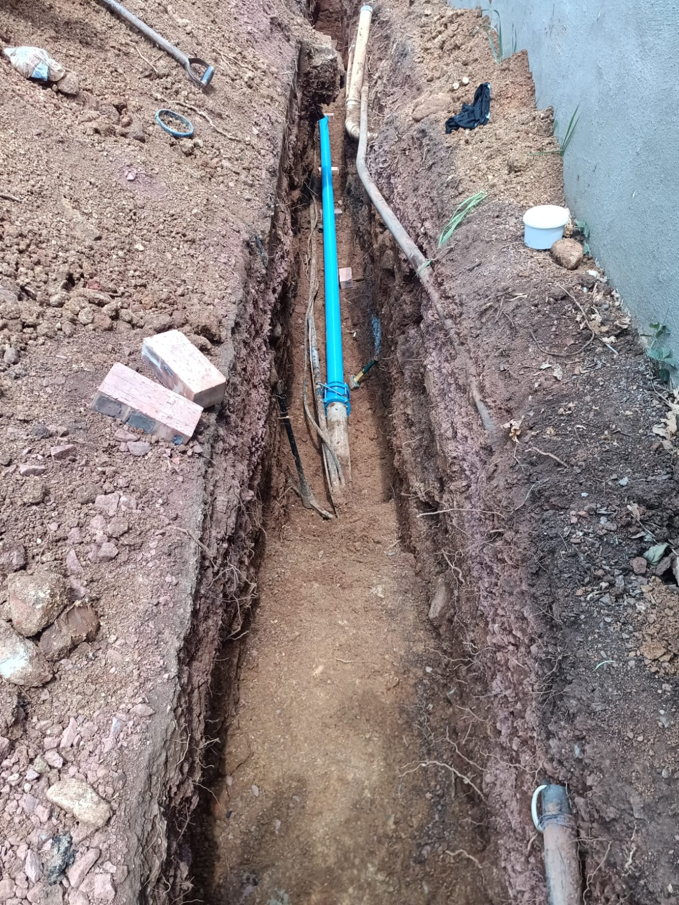

Sanglen Body Corporate
🚰 Borehole Water Station: Green Tanks Next to Pool
Residents can collect clean borehole water directly from the large green storage tanks situated next to the swimming pool.
- Location: Taps are on the green tanks next to the pool fence.
- Recommended Use: Toilet flushing, cleaning, and general washing. (Boil before drinking as standard precaution with borehole water, or use bottled water for drinking).
- Swimming Pool: The swimming pool itself is closed for water collection. Please do not dip buckets into the pool.
📋 Verified Status & Timeline
-
•
Old pipe removed: The broken section of the main supply line along the eastern roadway embankment has been completely excavated and removed.
-
•
New pipe installed: The plumbing team has installed new high-pressure blue pipe and connected it to the isolation valve using mechanical couplings.
-
•
Concrete anchor blocks: Concrete is being poured around the new fittings today to anchor the pipe securely against water pressure.
-
•
Concrete curing time: The concrete must dry and set before water can be turned back on. The plumbing team will inspect the cured concrete on Friday.
-
•
Restoration target: Controlled reopening and testing of the water supply is planned for Friday evening.
📸 On-Site Photos (Thursday Morning)

Trench along roadway with timber shuttering prepared for concrete pouring.

New high-pressure blue pipe connected to the main water line.

Mechanical coupling clamped in place before concrete encasement.
🛡️ Actions Required from Residents
-
🔒
Keep all taps firmly closed: This avoids airlocks in the pipes and prevents accidental overflow inside homes when water returns.
-
⚡
Switch off geyser breaker on your DB board: Turn off the switch labeled "GEYSER" to protect the heating element while pipes refill.
-
🚰
When water returns on Friday evening: Open an outside garden tap or cold bath tap first for one minute to clear air and dislodged sediment before opening indoor mixer taps.
💬 Need Assistance?
If you need a hand with carrying water containers from the green tanks, or know of an elderly neighbor who needs support, please message management:
💬 Message Sanglen Management on WhatsApp